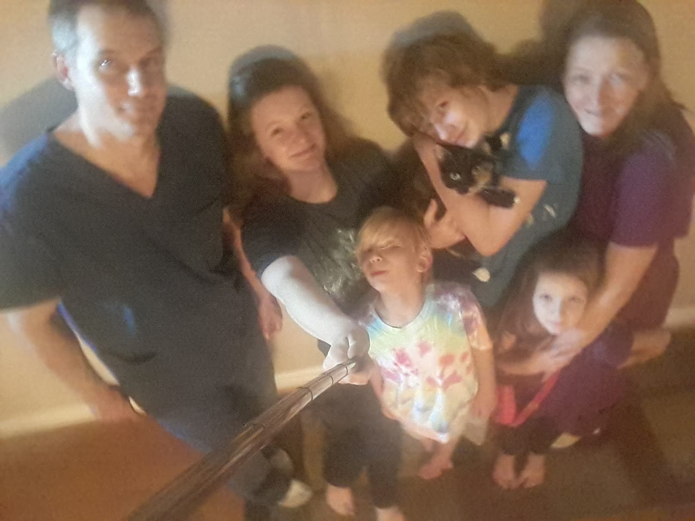

Index
Hello, my name is Gavyn Mitchell and this is my website. I created this website to showcase my HTML, CSS, and Javascript skills I learned at my time at Florence-Darlington Technical College, and to have the opportunity to share more about myself and my skills.
If you wish to know more about my skills and experience, visit the About Me page, for my degrees and certificates, visit the Education page, for more on what I do in my free time, visit the Hobbies page, and if you wish to contact me or view my Linked In, you can visit the Contact page or the footer of any page.
